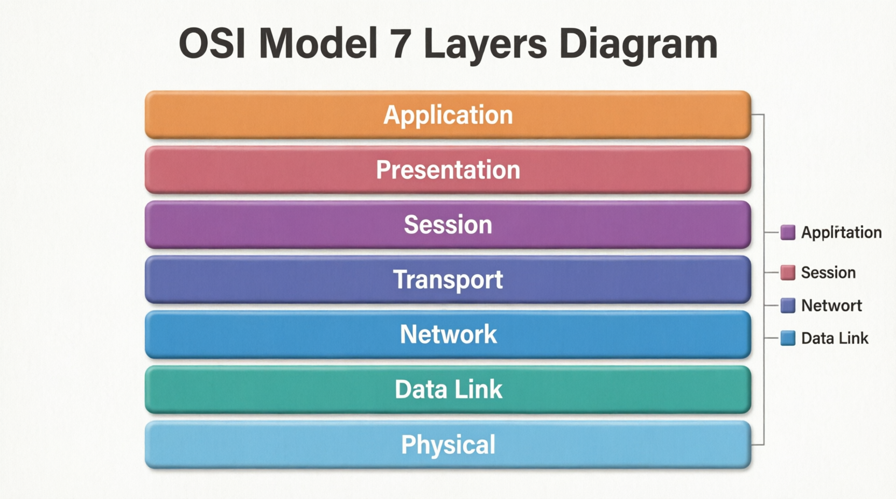

The 7 Layers of Network Communication

The OSI (Open Systems Interconnection) model divides networking into 7 layers. Each layer has a specific role in how data travels across a network.
Watch how data moves through each layer.
HTTP, FTP
Encryption
Connection
TCP / UDP
IP Routing
MAC
Signal